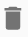
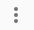
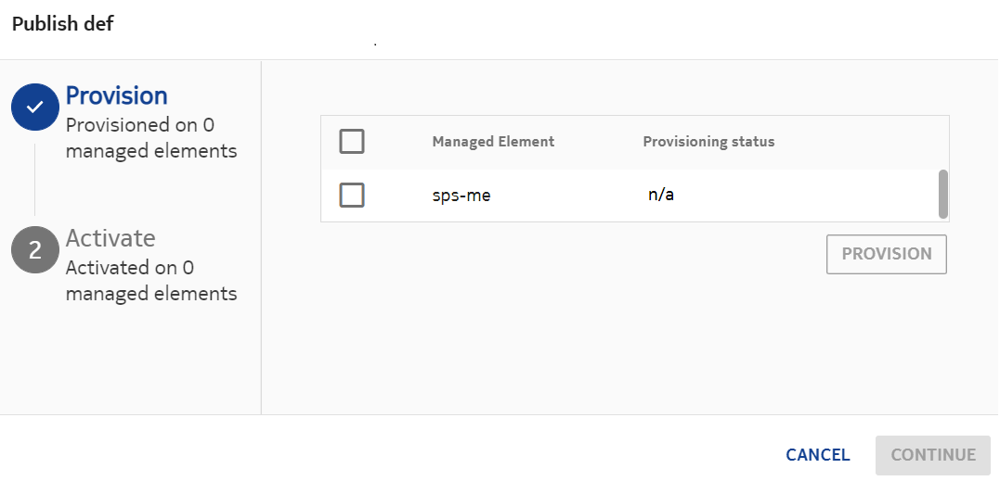
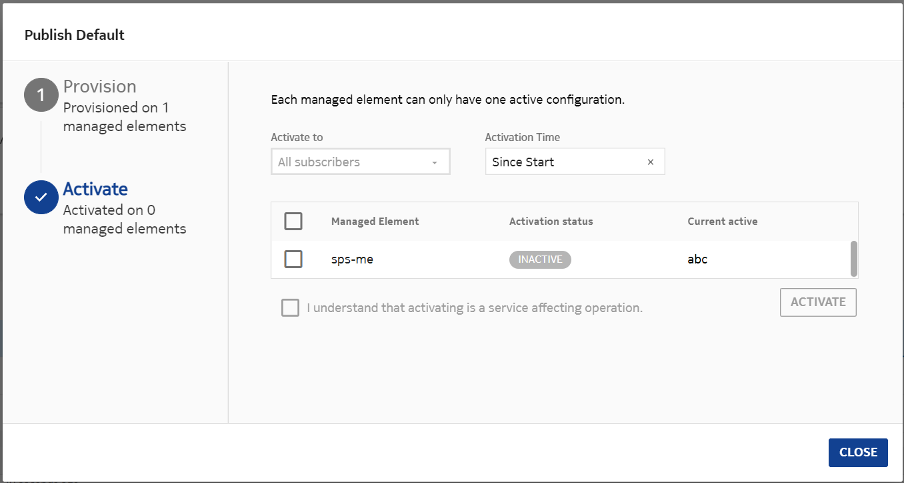

Rule System Version (RSV) acts as a container that holds rule groups and rule variables in NCC. Operators can customize NCC behavior using rules.
To view and manage the RSVs, in the new GUI go to Charging → ☰ → Catalog Rules → Rules and Variables.
Three types of RSVs can be configured using the following buttons:
- CHARGING: See sectionCharging rules for more information about the rules related to charging.
- RECHARGE: For rules related to Recharge microservice, see section Recharge rules in the Recharge User Guide.
- LIFECYCLE: See sectionCharging rules for more information about the rules related to charging.
A default RSV is available for each application. Click +NEW to create a new RSV and provide the name and description. The new RSV is created as Draft. You can change the state to Release and Active. The Active, In testing, Previously active, Scheduled RSVs are displayed under the Active heading. Inactive RSVs are displayed as a list on the bottom of the screen. There can be multiple RSVs in each state. Refer to RSV states for more details.
{kind=link}
RSVs in MNO/MVNO
The MNO/MVNOs create, manage, and use their own exclusive set of RSVs (that is, they can view and manage only their own RSVs). All of them have a default RSV. When a new MVNO is created, it also gets a default RSV. In addition to the default RSV, the MNO/MVNOs can create additional RSVs. They can have multiple active RSVs, each with different start dates. However, for each MVNO, at any point of time, only one RSV is effective. If there is no other active RSV available for an MVNO, then the default RSV is used. If the appropriate RSV cannot be identified for an MVNO due to any reason, then the active RSV of the MNO is used for the MVNO.
RSV states
Each RSV, whether it is imported or created, can exist in one of the following states:
- Draft: A version of the RSV that can be modified. When a RSV is created, it remains in this state.
- Released: A version that is completely configured and saved. The release version is usually one that has been demoted from active but is available to become the Active version again if needed. Changes are not allowed; you clone it and make it a draft version.
- Active: A read-only RSV that is active and ready for use starting from the configured start date. There can be multiple active RSVs. However, there is only one running RSV at any given time. The remaining active RSVs remain dormant and become the running RSV on their respective start dates. However, if an RSV has Start time = Since start, then it reverts to Released state once a new one starts running.
- In testing: The RSV is in this state if it is published for test devices.
- Scheduled: If Schedule activation is selected for an RSV and a Validity start is provided, then it becomes Active on that date and time. The RSV remains in Scheduled state before being Active.
- Previously active: An RSV that is still active but not effective.
You can filter the RSVs by RSV state using the check boxes provided above the list area.
RSV actions
| Icon | Action | Description |
|---|---|---|
| Actions available at the top-right corner of the page. | ||
| New | Create a new RSV. | |
| Import | Import an RSV JSON file. You cannot change the name of the file
you are importing in this release.  Note: Note: |
|
| Actions available in the RSV row on mouse hover. | ||
| Edit | Available when the RSV is in a Draft state. If the RSV is in a Release state, you can revert it to Draft if it has not been distributed to an ME. | |
| Duplicate | Duplicate is supported using the Duplicate button that appears in the RSV table when you hover the cursor over a line item in the table. You cannot change the name of the file you are cloning in this release. | |
| Export | Export the RSV as a JSON file. Note:
|
|
| Release | This action releases a Draft RSV to the selected MEs. After this action is complete, the state of the RSV changes to Released. Refer to Releasing an RSV for details. | |
| Activate |
After you have released the RSV, you can activate it for use. Refer to Activating an RSV and defining a start time for details. |
|
| Deactivate | Deactivate an Active RSV. Its status becomes Inactive. The Default RSV becomes the new Active RSV. | |
|  | Delete | Available when the RSV is in a Draft state. If the RSV is in a Release state, you can revert it to Draft if it has not been distributed to an ME. |
| Details | View details of the RSV. | |
|  | More | Explore more options. |
Releasing an RSV
- To release an RSV that is in Draft state, click → . The following
screen appears.
- Select the Managed Elements to which the RSV should be released.
- Click PROVISION.
- Click CONTINUE to further Activate the RSV.
Activating an RSV and defining a start time
- To Activate a RSV that is in Released state, click . The following
screen appears.
- Select the Managed Elements in which this RSV should be activated.
- In the Activate to drop-down list, select from the following options:
- All subscribers: The RSV is activated for all subscribers.
- Test devices: The RSV is activated only for test devices.
- In the Activation time drop-down list, select from the following
options:
- Activate now: The RSV becomes activated immediately.
- Replace default: When the RSV is released and activated, its start date becomes same as the start date of the first default RSV of the MNO/MVNO. In such case the default RSV moves to released state. An RSV created with this option reverts to released state when another RSV becomes the primary.
- Schedule activation: If this option is selected, a Validity start field appears. Provide a start date and time at which the RSV should become active. The RSV remains in Scheduled state before being Active.
- Select the I understand that activating is a service affecting operation. check box to acknowledge the content.
- Click ACTIVATE. The status ACTIVE is displayed in the screen. In the main screen, the RSV moves to the Active area.